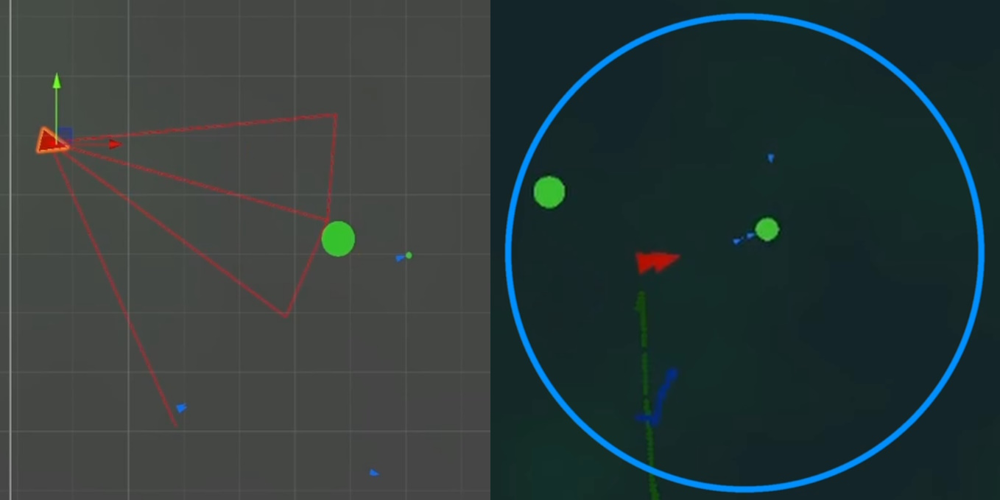
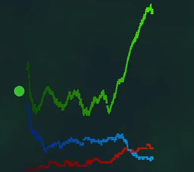

AI Pond Life Simulation
Using Unity, Two different AI agents are simulated - a Utility AI (with wants and needs like The Sims), and a behavior tree AI.
The prey agents eat the green food, and the predator agents eat the prey - the prey birth live young whereas the predators lay eggs which the prey can eat. Prey agents exhibit emergent flocking behavior, and both types of agent pass down genes, which can mutate, to their young.
Both species detect the world around them using a vision cone which is affected by the fog level at their current position (shown by the green fog). Predators also have a "heat-vision", whereas prey instead have a kind of "sonar ping".
The populations of each species are plotted over time on a graph.
